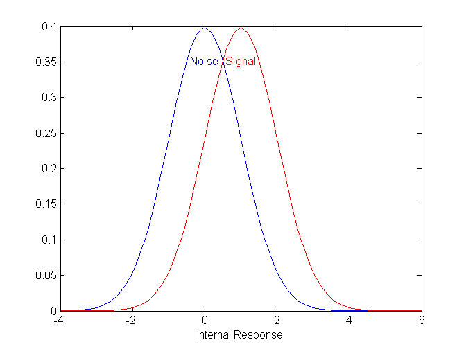
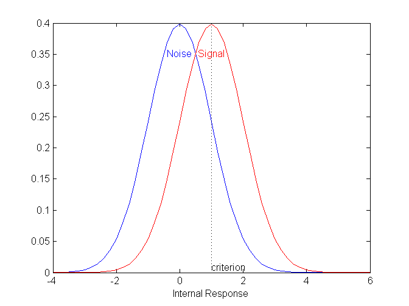
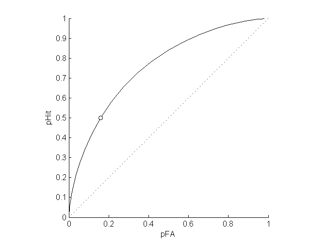
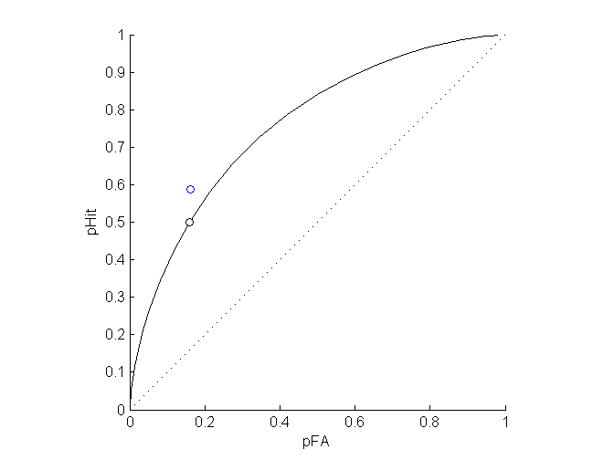
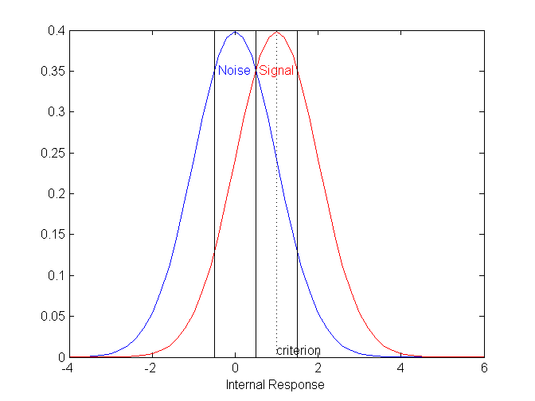
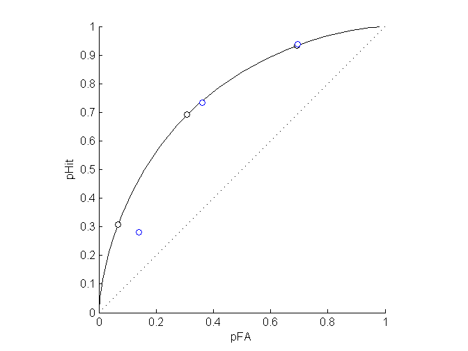
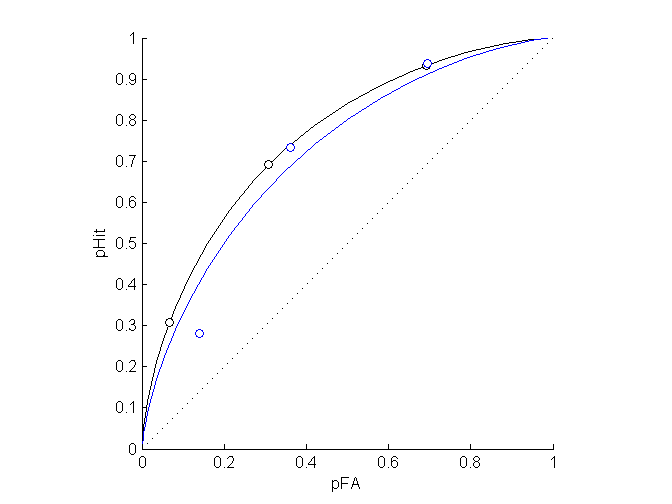
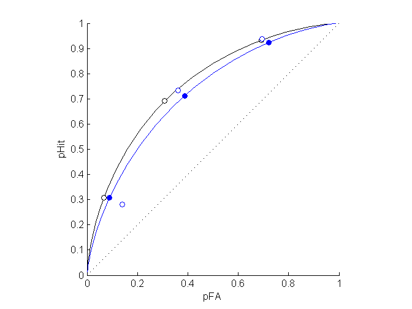
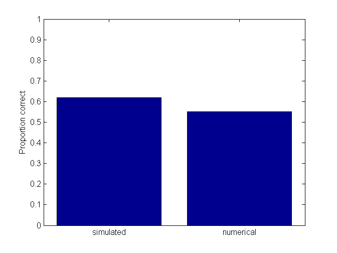
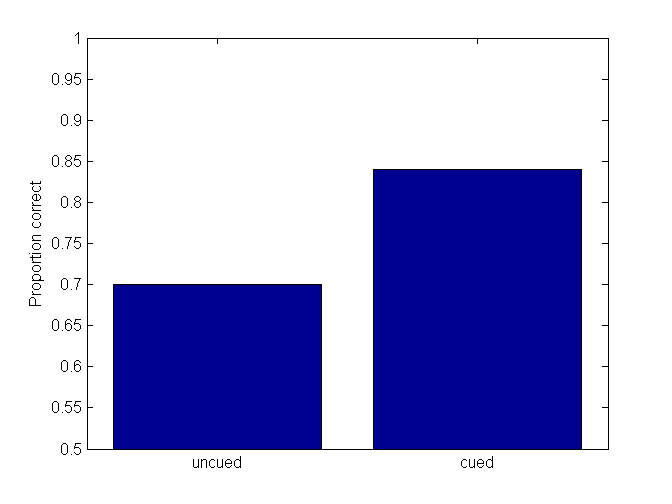

Contents
- Psychophysics Tutorial I: Signal Detection Theory and 2AFC
- Signal Detection Theory
- D-prime
- Estimating d-prime from Hits and False Alarms
- The ROC curve
- Area under the ROC curve
- The relationship between d-prime and the area under the ROC curve
- Simulating a Yes/No experiment
- Yes/No with rating scales
- Rating scales and the ROC curve
- Simulating a Yes/No experiment with rating scales
- Maximum likelihood fit of ROC curve
- Two-alternative forced choice (2AFC)
- N alternative forced choice
- Divided Attention
Psychophysics Tutorial I: Signal Detection Theory and 2AFC
Written June, 2012 by G.M. Boynton
This is the first Psychophysics tutorial, covering Signal Detection Theory, ROC curves and the 2AFC paradigm. See also the sdtTutorial which covers some of the same material.
Written by G.M. Boynton for CSHL 2012
addpath('Psychophysics');
Signal Detection Theory
Suppose you want to determine if a subject can reliably detect a weak stimulus. The simplest experiment would be to present this stimulus over multiple trials and ask if the subject saw it. But this won't work because, for example, the subject could simply say 'yes'on each trial. To alleviate this catch trials can be included to keep the subject from cheating.
Now suppose you introduce catch trials (no stimulus trials) randomly on half of the trials. The subject's task is to determine if the signal was present on any given trial. Stimulus present trials are called 'signal' trials, and stimulus absent trials are called 'noise' trials. A subject that guesses, or says 'yes' or 'no' on every trial will be performing at 50%, or chance level. No more cheating.
There is a range of stimulus intensities where a subject will perform somewhere between chance and 100% correct performance. The presence of such a 'soft' threshold is most commonly explained in terms of Signal Detection Theory (SDT).
SDT assumes that subjects base their decision on an internal response to a stimulus that varies trom trial to trial. If this internal response exceeds some criterion, the subject reports to have perceived the stimulus.
This trial-to-trial variability of the internal response could be due to variability in the stimulus itself (as in the case of Poisson noise for very dim lights), or to random neuronal noise at the sensory representation of the stimulus, or due to higher level variability in the attentional or motivational state of the subject.
Most commonly, this variability is modeled as a norrmal distribution centered around some mean. The simplest implementation has the mean response for the noise trials be zero and signal trials some larger value, with the standard deviations of the signal and noise responses the same.
Here are some example parameters all in a single structure
p.noiseMean = 0; p.signalMean = 1; p.sd = 1;
Here is a graph of the probability distribution for the internal responses to signal and noise trials:
z = -4:.2:6; %response-axis sampling points noise.y = normpdf(z,p.noiseMean,p.sd); signal.y = normpdf(z,p.signalMean,p.sd); figure(1) clf plot(z,noise.y); hold on plot(z,signal.y,'r-'); ylim = get(gca,'YLim'); text(p.noiseMean,ylim(2)*.9,'Noise','VerticalAlignment','top','HorizontalAlignment','center','Color','b'); text(p.signalMean,ylim(2)*.9,'Signal','VerticalAlignment','top','HorizontalAlignment','center','Color','r'); xlabel('Internal Response');
We next need to set a criterion value for determining what internal reponses lead to 'Yes' responses. We'll show it in the figure:
p.criterion = 1; plot(p.criterion*[1,1],ylim,'k:'); hcrit = text(p.criterion,0,'criterion','VerticalAlignment','bottom','HorizontalAlignment','left');
On any trial, one of four things will happen. Either the signal is present or absent crossed with the subject reporting 'yes' or 'no'. Trial types are labeled this way:
| Response |
Signal | "Yes" | "No" |
---------------------------------
Present | Hit | Miss |
| | |
---------+-----------+----------|
Absent | False | Correct |
| Alarm | Rejection|
---------------------------------It's easy to see that SDT predicts the probability of each of these four trial types by areas under the normal curve. The probability of a hit is the probability of drawing a value above the criterion, given that it came from the signal distribution:
pHit = 1-normcdf(p.criterion,p.signalMean,p.sd)
pHit =
0.5000
And the probability of a false alarm is:
pFA = 1-normcdf(p.criterion,p.noiseMean,p.sd)
pFA =
0.1587
The whole table looks like this:
disp(' '); disp(' | Response |') disp(' Signal | "Yes" | "No" |') disp(' ---------------------------------') fprintf(' Present | %3.1f%% | %3.1f |\n',100*pHit,100*(1-pHit)); disp(' ---------+-----------+----------|'); fprintf(' Absent | %3.1f | %3.1f |\n',100*pFA,100*(1-pFA)); disp(' ---------------------------------');
| Response |
Signal | "Yes" | "No" |
---------------------------------
Present | 50.0% | 50.0 |
---------+-----------+----------|
Absent | 15.9 | 84.1 |
---------------------------------
Since half the trials are signal trials, the overall performance will be the average of the hit and correction rate:
PC = (pHit + (1-pFA))/2; %proportion correct fprintf(' Percent Correct: %5.2f%%\n',100*PC);
Percent Correct: 67.07%
Play around with the parameters. See how:
1) If you shift your criterion very low or high performance will be at chance.
2) Performance is maximized when it's halfway between the signal and noise means. This is the criterion an 'ideal observer' should choose.
3) Performance increases as either the standard deviations decrease or the difference between signal and noise mean increases.
4) You can offset an increase between signal and noise means by increasing the standard deviation by the same amount. The model is over-parameterized.
D-prime
The goal of a psychophysicist is to learn something about the 'internal' response to a stimulus based on a behavioral responses. In SDT terms, we want to know the strength of the internal response to the signal relative to the noise. Formally, this is defined as the difference between the signal and noise means in standard deviation units and is called d-prime:
dPrime = (p.signalMean-p.noiseMean)/p.sd;
fprintf(sprintf(' dPrime = %5.2f\n',dPrime));
dPrime = 1.00
Estimating d-prime from Hits and False Alarms
You should see that simply reporting percent correct in a yes/no experiment is a problem because performance varies with criterion: you cannot estimate d-prime from percent correct alone.
Fortunately we can estimate d-prime by finding the difference in the corresponding z-values from the hit and false alarm rates:
zHit = norminv(pHit) zFA = norminv(pFA) dPrimeEst = zHit-zFA
zHit =
0
zFA =
-1
dPrimeEst =
1
This is a 'criterion' free estimate of d-prime, and is what is often reported instead of percent correct for a Yes/No experiment.
Play again with parameters. See how dPrimeEst stays constant for different criterion values.
The ROC curve
The criterion determines the trade-off between hits and false alarms. A low (liberal) criterion is sure to get a hit but will lead to lots of false alarms. A high (conservative) criterion will miss a lot of signals, but will also minimize false alarms. This trade-off is typically visualized in the form of a 'Reciever Operating Characteristic' or ROC curve. An ROC curve is a plot of hits against false alarms for a range of criterion values:
pHits = 1-normcdf(z,p.signalMean,p.sd); pFAs = 1-normcdf(z,p.noiseMean,p.sd); figure(2) clf hold on plot([0,1],[0,1],'k:'); axis equal axis tight xlabel('pFA'); ylabel('pHit'); plot(pFAs,pHits,'k-');
We can plot our example hit rate against false rate too:
plot(pFA,pHit,'ko','MarkerFaceColor','w');
Play around again. See how:
1) The point in the ROC curve moves around as you vary the criterion.
2)The 'bow' of the ROC curve varies with d-prime (either by increasing the signal mean or reducing the standard deviation.
Area under the ROC curve
You hopefully saw that increasing d-prime increases the bow of the ROC curve away from the diagonal. A measure of this bowing is the area under the ROC curve. This can be estimated by numerically integrating the sampled curve. We'll use Matlab's 'trapz' function. (The negative sign is to undo the fact that the ROC curve traces from left-to-right for increasing criterion values).
ROCarea = -trapz(pFAs,pHits)
ROCarea =
0.7595
We'll see later that this area has a special meaning - it's the percent correct that is expected in a two-alternative forced choice (2AFC) experiment.
The relationship between d-prime and the area under the ROC curve
d-prime can be calculated from the area under the ROC curve by:
dPrimeFromArea = sqrt(2)*norminv(ROCarea)
dPrimeFromArea =
0.9965
The calculus behind this is interesting but we'll pass on it.
Simulating a Yes/No experiment
Next we'll use SDT to simulate a subject's response to a series of trials in a Yes/No experiment and estimate the d-prime value that was used in the simulation
nTrials = 100; isSignal = logical(floor(rand(1,nTrials)+.5)); %coin flip for each trial % % Generate the internal response for each trial x = randn(1,nTrials)*p.sd; %draws from normal distribution with standard deviation sd. x(isSignal) = x(isSignal) + p.signalMean; x(~isSignal) = x(~isSignal) + p.noiseMean; % Subject responds '1' if the internal response exceeds the criterion. response = x>p.criterion; % Calculate hits and false alarms pHitSim = sum(response(isSignal))/sum(isSignal); pFASim = sum(response(~isSignal))/sum(~isSignal); % Show the simulated values in the table disp(' '); fprintf('Simulation of %d trials:\n',nTrials); disp(' | Response |') disp(' Signal | "Yes" | "No" |') disp(' ---------------------------------') fprintf(' Present | %3.1f%% | %3.1f |\n',100*pHitSim,100*(1-pHitSim)); disp(' ---------+-----------+----------|'); fprintf(' Absent | %3.1f | %3.1f |\n',100*pFASim,100*(1-pFASim)); disp(' ---------------------------------'); % plot it on the ROC curve figure(2) hROC = plot(pFASim,pHitSim,'bo','MarkerFaceColor','w'); % calculating d-prime from pHit and pCR zHitSim = norminv(pHitSim); zFASim = norminv(pFASim); dPrimeSim = zHitSim-zFASim; fprintf('d-prime from simulation = %5.2f\n',dPrimeSim);
Simulation of 100 trials:
| Response |
Signal | "Yes" | "No" |
---------------------------------
Present | 58.7% | 41.3 |
---------+-----------+----------|
Absent | 16.2 | 83.8 |
---------------------------------
d-prime from simulation = 1.21
 Compare the simulated values to the expected values from the STD model. You can run this section over and over to look at the variability of the d-prime estimate. You can see that:
1) The estimates of d-prime become more accurate with increasing number of trials
2) The estiamtes of d-prime become less accurate with criterion values that deviate from the ideal value. This is important. we typically don't have control over the criterion. If a lame subject says 'yes' or 'no' almost all the time then there is very litle information for estimatingJ d-prime.
3) If you're motivated, add a loop to simulate a bunch of simulations to estimate the variability in the estimate for a range of model parameters.
Simulations like this illustrate an often neglected fact: A 'perfect' subject that makes decisions according to Signal Detection Theory will still have variability in performance from experimental run to experimental run. That is, ideal observers will still generate data with finite-sized error bars. Simulations can give you a feel for how small the erorr bars should be under ideal conditions.
Yes/No with rating scales
One way to get around the criterion problem is to allow subjects more options in their response. For example, rather than having two buttons, let them have four to indicate their confidence that a signal was present:
1: Definately no 2: Probably no 3: Probably yes 4: Definately yes
This effectively allows the subject to have more than one criterion. To model this with SDT, three criterion values will divide the internal response range into the four response categories:
p.criterion = [-.5,.5,1.5]; figure(1) for i=1:length(p.criterion) plot(p.criterion(i)*[1,1],ylim,'k-'); end
Rating scales and the ROC curve
We can visualize these criterion values on the ROC curve like we did for the single criterion earlier:
pHit = 1-normcdf(p.criterion,p.signalMean,p.sd); pFA = 1-normcdf(p.criterion,p.noiseMean,p.sd); % This will clean up the ROC plot and plot the new expected points: figure(2) clf hold on plot([0,1],[0,1],'k:'); axis equal axis tight xlabel('pFA'); ylabel('pHit'); plot(pFAs,pHits,'k-'); plot(pFA,pHit,'ko','MarkerFaceColor','w');
For example, pHit for the lowest point on the ROC curve corresponds to the probability that subject will report a 2, 3 or 4 on a signal trial. The next one up is for 3 or 4, and the highest is the probability of a hit if a subject just reponds '4'.
Simulating a Yes/No experiment with rating scales
nTrials = 100; isSignal = logical(floor(rand(1,nTrials)+.5)); %coin flip for each trial % Generate the internal response for each trial x = randn(1,nTrials)*p.sd; %draws from normal distribution with standard deviation sd. x(isSignal) = x(isSignal) + p.signalMean; x(~isSignal) = x(~isSignal) + p.noiseMean; critRange = [-inf,p.criterion]; response = zeros(1,nTrials); for i=1:nTrials response(i) = find(x(i)>critRange,1,'last'); end for i=1:length(p.criterion) pHit(i) = sum(response(isSignal==1)>i)/sum(isSignal==1); pFA(i) = sum(response(isSignal==0)>i)/sum(isSignal==0); end figure(2) hold on plot(pFA,pHit,'bo','MarkerFaceColor','w'); title('');
Run this section over and over to get an idea of the variability of the simulation with respect to the expected values on the ROC curve.
Maximum likelihood fit of ROC curve
You probably have the (correct) intuition that the rating scale information adds reliability to the estimate of d-prime. But now we have the problem of translating these three points on the ROC curve to a single estimate of d-prime.
There are a variety of ways of doing this. One would be to use the cumulative normals like we did before for each of the three points on the ROC curve and average them. But this doesn't seem right - different points should have different weights due to variability in their reliablity.
We'll implement a model fitting method. You should appreciate that every point in the 2D ROC space corresponds to a unique pair of d-prime and criterion values. That's why there is a direct translation between a single point on the ROC curve and d-prime. But now we have three points in ROC space that don't necessarily fall on the same ROC curve. Our goal is to find the single ROC curve that passes closest to the three points. Specifically, we need a four-parmeter fit: what d-prime and three criterion values best fits our observed values?
To do this we need a cost function that takes in a set of model parameters and data points and returns a value that represents goodness of fit. Then we'll use Matlab's optimization routine to find the model parameters that minmizes this cost function.
When dealing with proportions, the cost function is always in terms of likelihood (You should never use a least-squares criterion for proportional data!) Our cost function will be the probability of our observed data for a given set of model parameters.
Suppose the first trial was a noise trial and the subject reported '1' (Definately no). Looking at figure 1, the probability of this happening is the area under the blue curve to the left of the 1st criterion:
fprintf('Probability of responding ''1'' on a noise trial: %5.4f\n',normcdf(p.criterion(1),p.noiseMean,p.signalMean));
Probability of responding '1' on a noise trial: 0.3085
The probability of responding '2' is the area between the 1st and second criteria and so on. The whole table of probabilities can be computed like this:
critRange = [-inf,p.criterion,inf]; for i=1:length(critRange)-1; pResp(i,1) = normcdf(critRange(i+1),p.noiseMean,p.sd)-... normcdf(critRange(i),p.noiseMean,p.sd); pResp(i,2) = normcdf(critRange(i+1),p.signalMean,p.sd)-... normcdf(critRange(i),p.signalMean,p.sd); end disp(pResp);
0.3085 0.0668
0.3829 0.2417
0.2417 0.3829
0.0668 0.3085
The first column is for noise trials, the second is for signal trials, and each row corresponds to each response ('1'-'4'). Verify that the sum of the columns add up to 1
The probability of obtaining our observed data set based on these probabilities is the product of the probabilities associated with each trial. Multiplying 100 values that are less than 1 produces a ludicrously small number, so we almost always maximize log likelihood instead. Acutally, we'll use the negative of the log likelihood because optimization routines minmize functions. The negative of the log likelihood of our observed data is:
cost = 0; for i=1:length(isSignal); cost = cost-log(pResp(response(i),isSignal(i)+1)); end fprintf('Negative of log likelihood: %5.4f =',cost);
Negative of log likelihood: 127.6301 =
I've written a function that does this because we'll need it for the optimization routine:
disp(logLikelihoodROC(p,isSignal,response))
127.6301
To find the parameters that minimize our cost function we'll use Matlab's 'fminsearch' function. I find their implementation extremely useful, but inflexible. Instead, I've written a wrapper function called 'fit' that allows you to choose which parameters to hold fixed and which to set free. It works like this:
pBest = fit('logLikelihoodROC',p,{'signalMean','criterion'},isSignal,response);
Fitting "logLikelihoodROC" with 4 free parameters.
The first argument is the name of the cost function. The cost function must take in a structure containing the model parameters as its first argument ('p' here). The second argument into 'fit' is a structure containing the intial parameters for the model fit. The third is a cell array containing the names of the fields for the parameters to be allowed to vary. If the field corresponds to an array (like 'criterion' here), all values in the array will be set free. The remaining fields are the remaining inputs into the cost function.
Look at the best-fitting parameters:
pBest
pBest =
noiseMean: 0
signalMean: 0.8464
sd: 1
criterion: [-0.5887 0.2847 1.3461]
Do they resemble the original model parameters:
p
p =
noiseMean: 0
signalMean: 1
sd: 1
criterion: [-0.5000 0.5000 1.5000]
Let's draw the ROC curve for the best fitting SDT parameters in blue:
pHitsBest = 1-normcdf(z,pBest.signalMean,pBest.sd);
pFAsBest = 1-normcdf(z,pBest.noiseMean,pBest.sd);
plot(pFAsBest,pHitsBest,'b-');
 And plot the estimated three ROC points from the model on the blue curve
pHitBest = 1-normcdf(pBest.criterion,pBest.signalMean,pBest.sd); pFABest = 1-normcdf(pBest.criterion,pBest.noiseMean,pBest.sd); plot(pFABest,pHitBest,'bo','MarkerFaceColor','b');
Our estimate of d-prime is then simply:
dPrimeEst = (pBest.signalMean-pBest.noiseMean)/pBest.sd;
fprintf('Estimated d-prime: %5.2f\n',dPrimeEst);
Estimated d-prime: 0.85
Run this over and over to get a feel for the variability of the estimate of d-prime. Does the rating scale provide a more reliable estimate of d-prime than the standard Yes/No experiment? You can test this more formally by repeating a bunch of simulations.
Two-alternative forced choice (2AFC)
Another way to avoid the criterion problem is to use a two-alternative-forced-choice paradigm (2AFC) where a trial consists of both a signal and noise draw in either random temporal order or spatial position. The subject must choose which draw contains the signal. 2AFC is easilly modelled with SDT by drawing once from the signal, and once from the noise distribution. The subject decides that the signal came from the draw with the larger value.
Let's get rid of the 'criterion' field:
if isfield(p,'criterion') p = rmfield(p,'criterion'); end
Here's a simulation: as before...
nTrials = 100; x= randn(2,nTrials); x(1,:) = x(1,:)*p.sd + p.noiseMean; x(2,:) = x(2,:)*p.sd + p.signalMean; response = x(2,:)>x(1,:);
Response is 1 for correct trials, when the draw from the signal exceeds the noise draw.
Overall performance is the mean of the response vector:
pc2AFC = mean(response);
fprintf('Percent correct: %5.3f\n',pc2AFC);
Percent correct: 0.700
Note that percent correct is greater than the best percent correct in the yes/no experiment.
Here's something interesting: the expected percent correct in 2AFC should be equal to the area under the ROC curve:
fprintf('Area under ROC: %5.3f\n',ROCarea);
Area under ROC: 0.759
Run this section several times over to convince yourself that this is true. This means that d-prime can be directly estimated from percent correct for a 2AFC experiment (because d-prime is directly related to area under the ROC curve).
dPrimeFrom2AFC = sqrt(2)*norminv(pc2AFC);
fprintf('d-prime estimated from 2AFC simulation: %5.2f\n',dPrimeFrom2AFC);
d-prime estimated from 2AFC simulation: 0.74
How reliable is this estimate of d-prime? An interesting exercise would be to measure the standard deviation of the d-prime estimates for repeated simulations of the standard Yes/No, the Yes/No rating method, and the 2AFC method. Which wins?
N alternative forced choice
Forced choice experiments can include more than two options. For example, suppose a target could appear randomly in one of four spatial positions. This can be modeled with SDT as taking three samples from the noise distribution and one from the signal distribution. Like for 2AFC, the subject chooses the location with that generated the largest response. A correct response occurs when the draw from the signal distribution exceeds the maximum of the noise draws. This is easy to simulate:
nTrials = 100; p.noiseMean = 0; p.signalMean =1; p.sd = 1; nAlternatives = 4; signal = randn(1,nTrials)*p.sd+p.signalMean; %one draw from signal noise= randn(nAlternatives-1,nTrials)*p.sd+p.noiseMean; %three from noise response = signal>max(noise); PC4AFC = mean(response)
PC4AFC =
0.6200
There is a solution (using numerical integration) for percent correct for an NAFC experiment:
dPrime = (p.signalMean-p.noiseMean)/p.sd; z = linspace(-5,5,501); dz = z(2)-z(1); nAlternatives =4; PC4AFCnumerical = sum(normpdf(z-dPrime).*normcdf(z).^(nAlternatives-1))*dz; figure(3) bar([PC4AFC,PC4AFCnumerical]); set(gca,'XTickLabel',{'simulated','numerical'}); set(gca,'YLim',[0,1]); ylabel('Proportion correct');
Divided Attention
Let's simulate a real divided attention experiment. Again there are four spatial positions, but this time it's a 2AFC experiment in which a signal (like a grating or something) appears in one of the positions on one of two intervals. The subject's job is to determine the interval that contained the signal, wherever it was. Now, consider two conditions, one in which you have no idea which of the four conditions will have the signal and one in which you are cued to the correct location. It's still a 2AFC task, but one forces you to divide your spatial attention. Again, it's easy to simulate.
nTrials = 100; nPositions = 4; %divided attention (no cue to position) %noise interval - 4 random draws noise = randn(nPositions,nTrials)*p.sd+p.noiseMean; %signal interval - 3 random draws, one signal draw signal = randn(nPositions,nTrials)*p.sd; signal(1,:) = signal(1,:)+p.signalMean; signal(2:nPositions,:) = signal(2:nPositions,:) +p.noiseMean;
decision rule: choose the signal interval if the max of the 3 noise + 1 signal draws exceeds the max of the four noise draws
response = max(signal,[],1)>max(noise,[],1); PCuncued = mean(response);
If there is a cue to the spatial position, then we can assume that the subject ignores the thee uncued locations. This is just a the same old 2AFC experiment. Equivalently we can use the same code with nPositions set to 1:
clear signal noise nPositions = 1; noise = randn(nPositions,nTrials)*p.sd+p.noiseMean; signal = randn(1,nTrials)*p.sd; signal(1,:) = signal(1,:)+p.signalMean; signal(2:nPositions,:) = signal(2:nPositions,:) +p.noiseMean;
decision rule: choose the signal interval if the max of the 3 noise + 1 signal draws exceeds the max of the four noise draws
response = max(signal,[],1)>max(noise,[],1); PCcued = mean(response); figure(3) bar([PCuncued,PCcued]); set(gca,'XTickLabel',{'uncued','cued'}); set(gca,'YLim',[.5,1]); ylabel('Proportion correct');
This result is both obvious and deep. Imagine viewing this graph before going through the tutorial. Suppose spatial attention leads to enhanced responses in neurons with receptive fields at potential relevant locations. Suppose also that attention is resource limited so that dividing your attention leads to a weaker attentional gain for each location compared to the cued condition. Like the spotlight of attention has a fixed amount of stuff to spread around. Finally, assume that a gain change can help performance by increasing the signal-to-noise ratio of. It would follow that weaker gain changes for the uncued (divided attention) condition should lead to poorer performance,
This argument is all over the attention field. But this simulation shows that you can get strong behavioral effects for attention without any gain changes at all! This idea was was elegantly described by John Palmer in the 80's, was largely ignored in the 90's and 00's, but has returned recently in light of optical imaging and fMRI results showing that V1 responses don't seem to change much with divided attention.